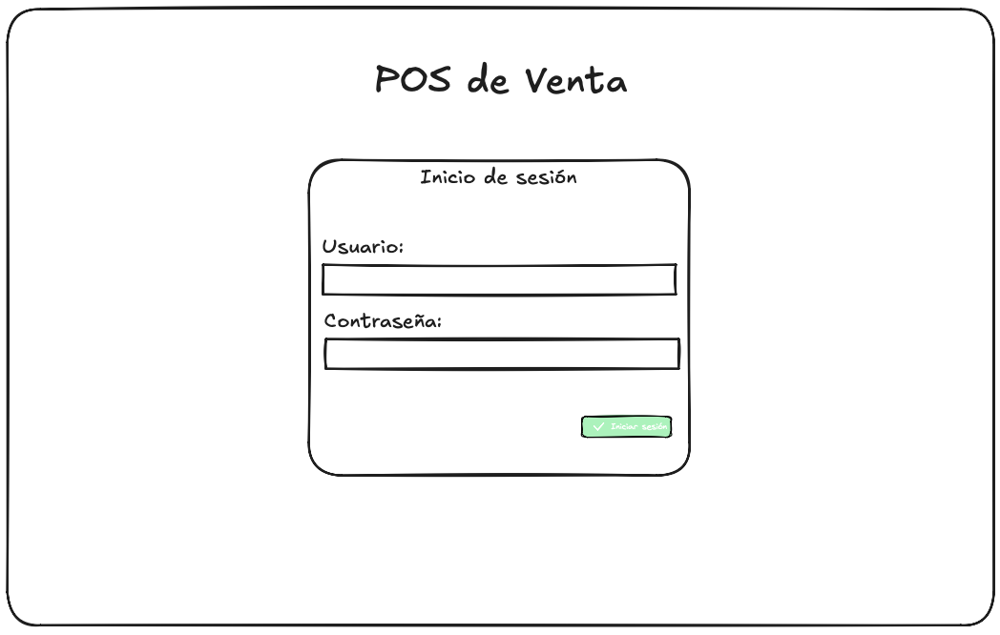
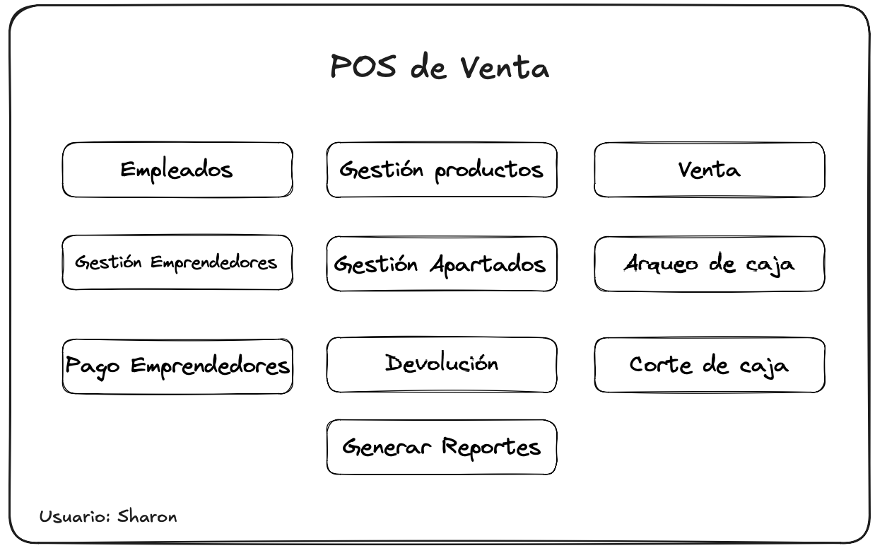
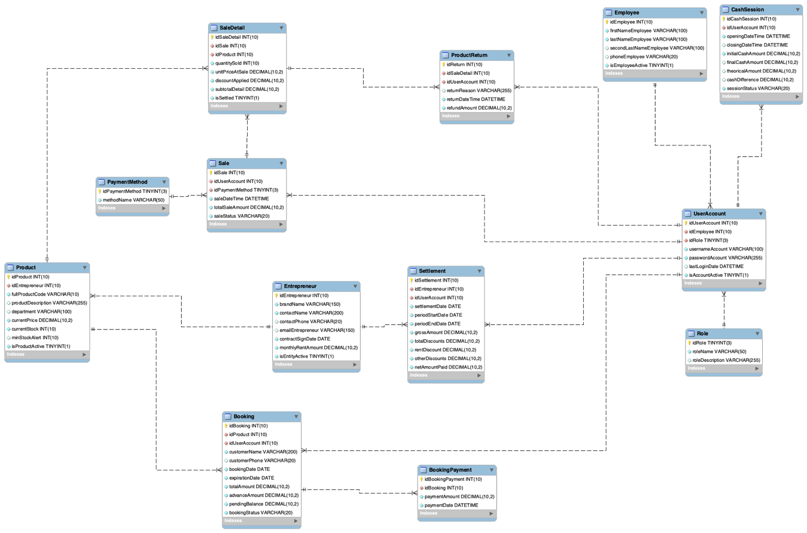
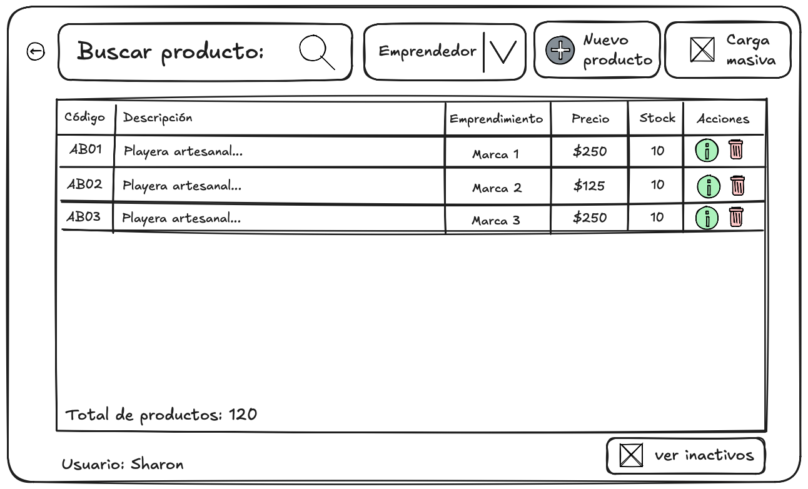
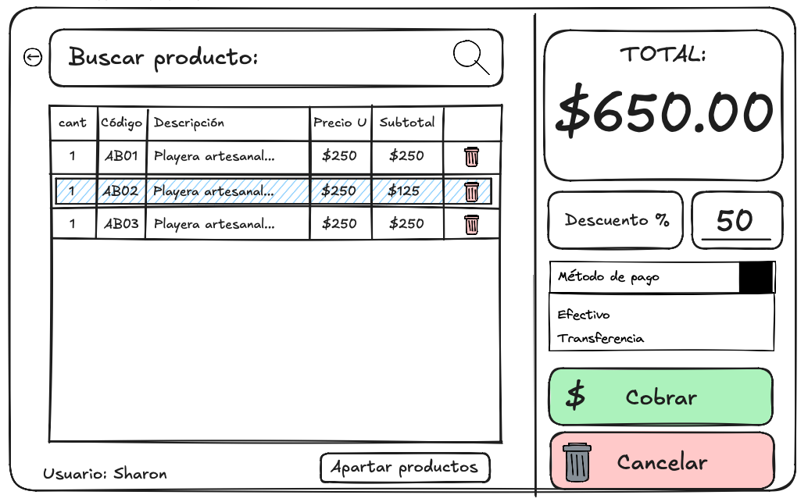
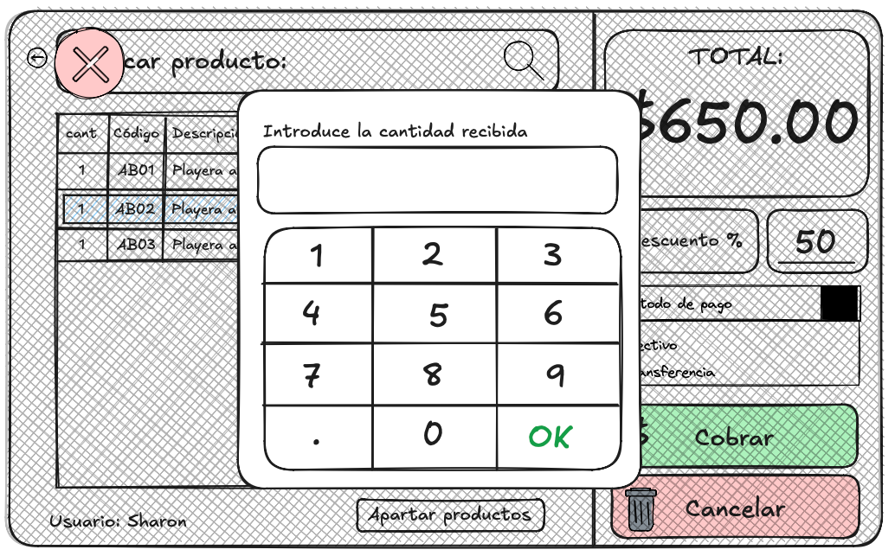
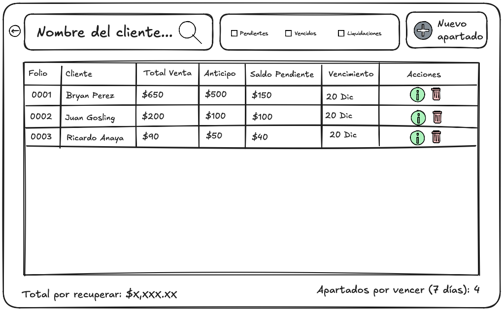
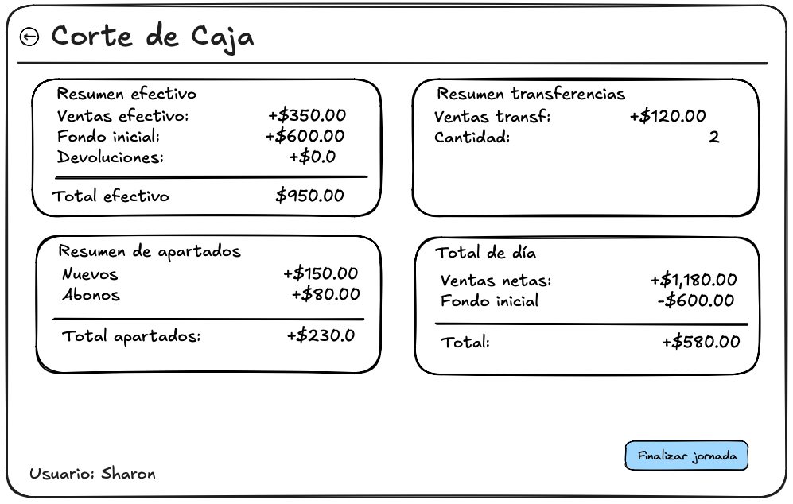
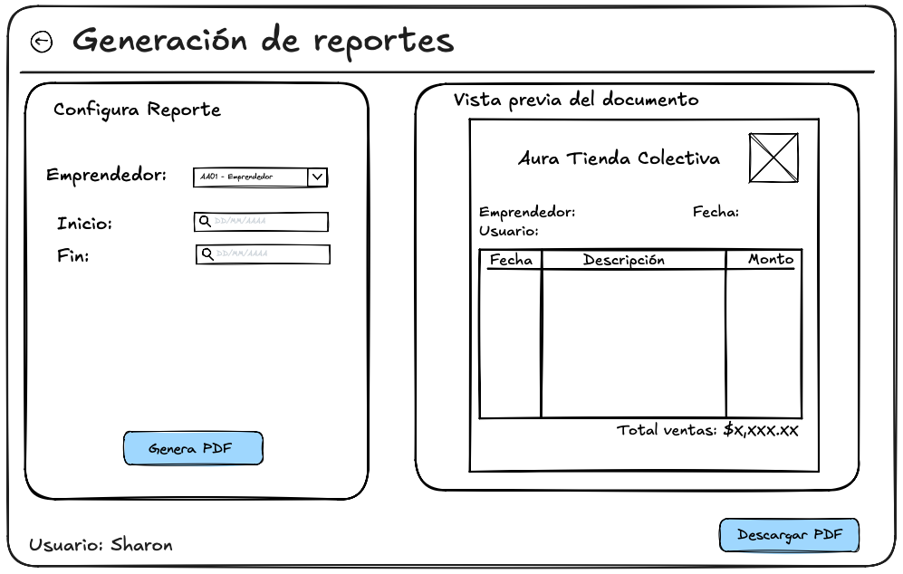

Sistema de punto de venta para tiendas colectivas multi-marca
Aplicación de escritorio en Java que automatiza la operación de más de 35 marcas independientes bajo un mismo local, gestionando inventario, ventas, apartados y liquidaciones a emprendedores de forma local y autónoma.
Las tiendas colectivas (concept stores) reúnen productos de decenas de emprendedores independientes bajo un mismo techo. Sin un sistema centralizado, el registro de ventas y existencias se hacía a mano o en hojas de cálculo, generando errores en la atribución de ventas por marca y discrepancias en el pago de rentas y saldos.
El reto no era solo cobrar: era saber, de cada peso vendido, exactamente a qué emprendedor pertenece.

Un POS de escritorio con control de acceso por roles (Administrador y Empleado), donde cada producto queda vinculado a un código alfanumérico y a un emprendedor específico desde su alta en el inventario. Cada venta, apartado o devolución se traza hasta el usuario y la marca correspondiente, eliminando la atribución manual de ingresos.

35+
Marcas independientes gestionadas bajo un solo sistema.
500+
Productos en catálogo, con control de stock en tiempo real.
$15,000 MXN
Promedio en transacciones mensuales procesadas por el POS.
Un mismo ticket puede incluir productos de distintos emprendedores, con descuentos manuales y desglose automático por marca.
Reserva de productos con anticipo, abonos sucesivos y alertas de vencimiento antes de liberar el artículo al stock general.
Verificación preventiva del efectivo durante el turno y cierre contable diario que bloquea la edición de ventas pasadas.
Cálculo automático del monto neto a pagar por periodo (ventas brutas menos renta fija), marcando cada partida como liquidada.
Estados de cuenta por emprendedor y cortes de caja exportables, con desglose cronológico de cada artículo vendido.
Verificación del motor MariaDB y del esquema de tablas al arrancar, con reparación automática para operar sin soporte técnico presencial.
Interfaz de escritorio en Java Swing con FlatLaf para una estética moderna, navegación tipo Hub-and-Spoke y control estricto de tabulación para operar sin mouse.
Lógica de negocio en Java: valida datos en tiempo real, coordina transacciones ACID y traduce cada acción del operador en peticiones al modelo.
Persistencia en MariaDB portable mediante JDBC, con
BigDecimal y columnas DECIMAL(10,2)
para garantizar exactitud en cada cálculo financiero.






